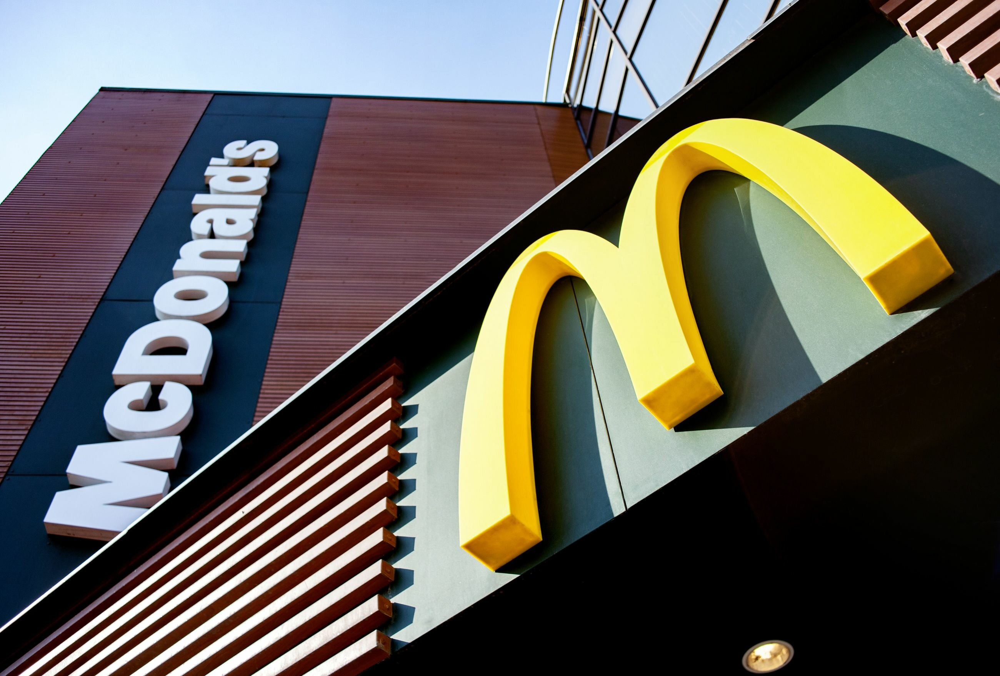
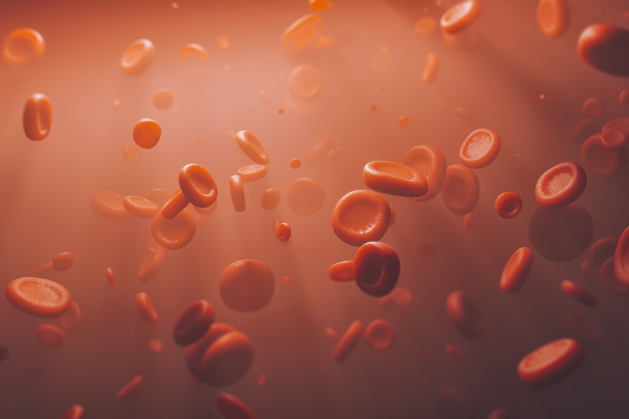
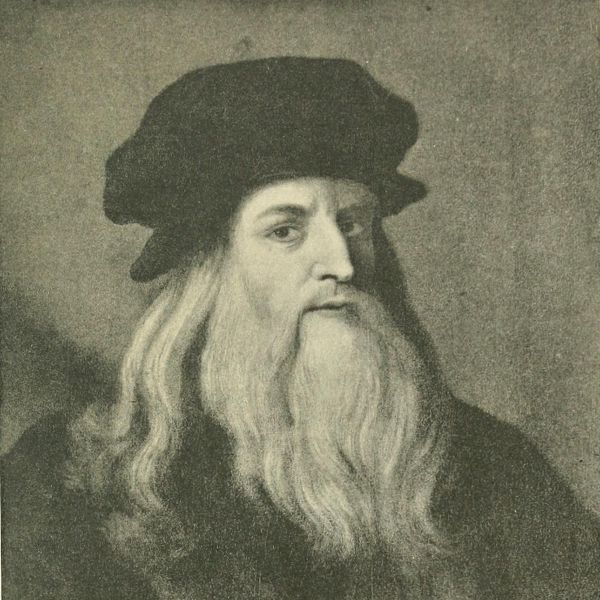
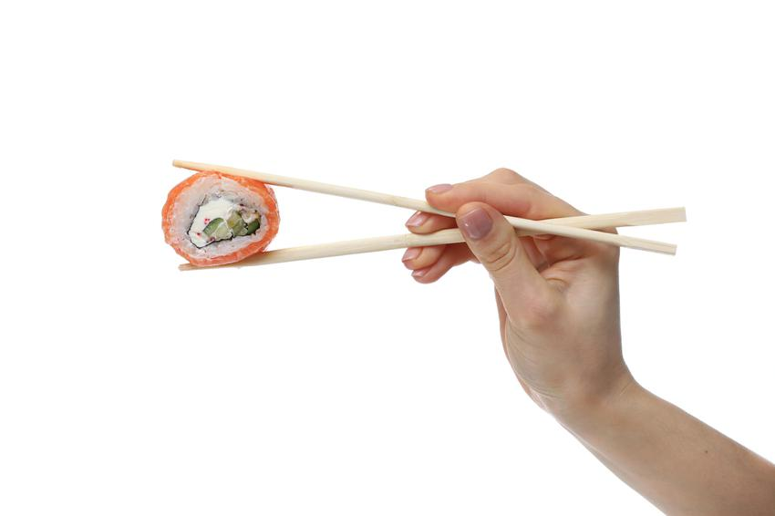
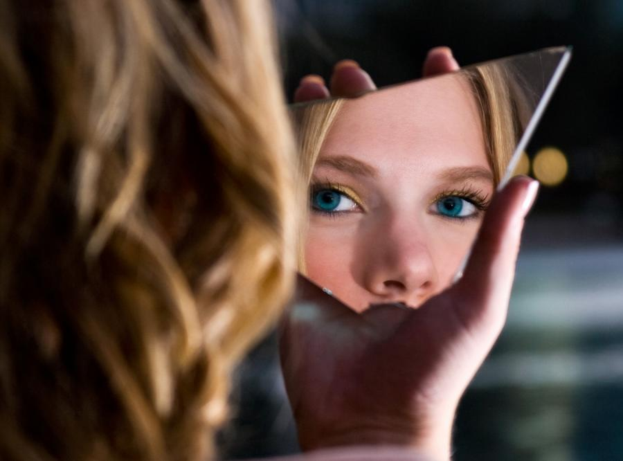
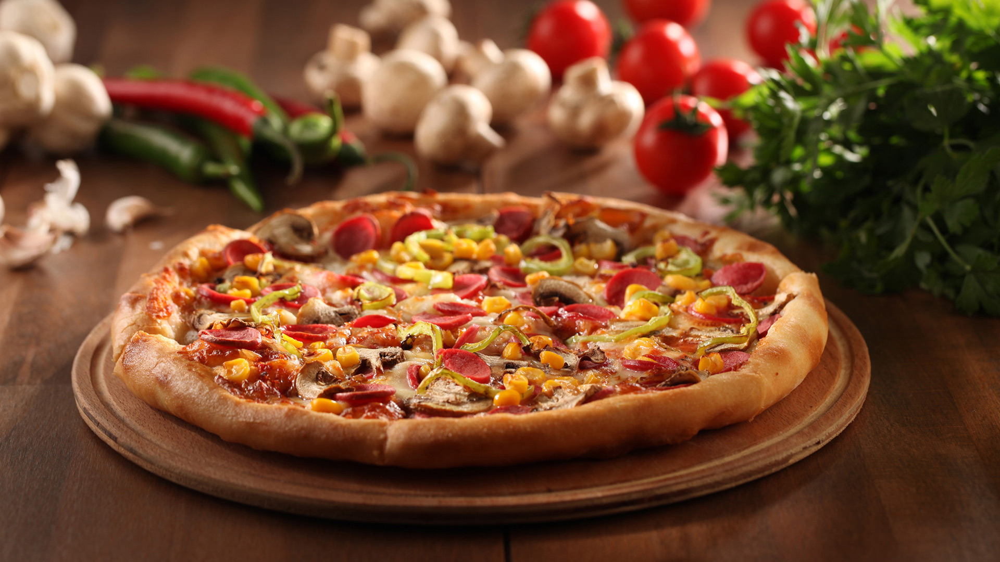
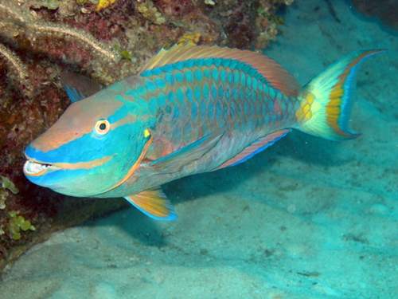

|  | #1 Szwecja ma więcej McDonaldów na osobę niż jakikolwiek inny kraj w Europie. |
| #2 Nie wszystkie żyjące stworzenia mają czerwona krew. Polarne ryby Arktyki mają krew w kolorze białym, natomiast kałamarnice, większość ślimaków, skorpiony, pająki i liczne gatunki skorupiaków mają krew błękitną. |
 |
|  | #3 Leonardo da Vinci potrafił wykonywać jednocześnie dwie czynności, używając rąk, mianowicie jedną malował, a drugą pisał. Jest także uznany za twórcę lustrzanego pisma, uznaje się bowiem, że w ten sposób szyfrował swoje prace. Tekst, napisany w ten sposób, można było odczytać jedynie za pomocą lustra. |
| #4 Chińczycy w ciągu roku zużywają ponad 80 miliardów pałeczek. |
 |
| #5 Psychologowie twierdzą, że osoby, które udzielają najwięcej porad, najczęściej same mają najwięcej problemów. |
|
| #6 Tak naprawdę nigdy nie widzieliśmy swojej twarzy. Widzieliśmy tylko jej odbicie, zdjęcie czy nagranie. |
 |
|  | #7 Pizza jest jednym z ulubionych dań wielu ludzi. Jak dowodzą badania jedzenie pizzy zmniejsza ryzyko raka przełyku. |
| #8 W stanie Massachusetts chrapanie jest zabronione przez prawo. Chrapać można tylko w pomieszczeniu, które jest szczelnie zamknięte. |
|
|  | #9 Papugoryba to ryba, która produkuje piasek. Połyka zmiażdżony koral, pobiera z niego substancje odżywcze, a resztę wydala w postaci w piasku. |
| #10 Pierwszy film na YouTube! |